CANFIS is a tool for displaying module parameters on the screen of the instrument cluster.
It communicates using the same protocol as a navigation unit.
It supports the KWP-CAN and UDS diagnostic protocols for reading data from control modules.
Features
Boot logo - display your own image when you start the car
Parking sensors visualization - display the distances reported by the Optical Parking System
Configurable parameter display - define up to 100 pages of custom sets of measurements from control modules
Graphs - plot the value of a defined measurement
Diagnostics - connect to control modules to read measuring blocks (only KWP-CAN), fault codes, and information about the module
IdentificationFault codesMeasuring blocks
Acceleration timer - measure how quickly the car accelerates between two configurable speed values
Oil level gauge - get a visualization of the current oil level
Wi-Fi updates - simple interface used for configuring the device, boot logo and uploading firmware updates
Notes
It can connect to modules which use the KWP-CAN or UDS protocol. Measuring blocks do not exist for UDS.
It cannot be used with a navigation unit that also needs to display on the screen.
For the RNSE, there is custom firmware available, which allows parallel operation with the navigation.
When viewing sets of measurements (in the ECU data menu), you cannot use a diagnostic tester to connect to a module that is already in use.
You can use a diagnostic tester on other modules, but it is recommended to exit the menu beforehand.
Installation
To install the CANFIS module, you will need an 8mm and Torx 25 screwdriver.
Remove the fuse cover on the left side of the dashboard.
Unscrew three 8mm bolts: one under the fuse cover, and two at the bottom, on the left and right sides of the lower dashboard cover (the one with the headlight switch and footwell lighting switch [depending on the equipment]).
Remove the dashboard cover, which is attached with clips. For ease of work, you can unplug the diagnostic socket, headlight switch, and optionally the footwell lighting plug, and set the cover aside.
Use the Torx 25 screwdriver to unscrew the footwell vent nozzle (the screw is located approximately in the middle). Remove and set the nozzle aside.
On the right side, towards the top, you will find the Gateway module and a red plug (2003-2008) or a black plug (2008-2012) leading to it. Carefully, without pulling forcefully, disconnect the plug from the Gateway module in the car and connect it to the CANFIS module. Connect the plug coming from the CANFIS module to the Gateway module in the car.
Position the CANFIS module loosely so that the cable is not strained.
Assemble everything in the reverse order.
Ensure that module 37 - Navigation is enabled in the Gateway installation list.
Getting started
Install the module by following the instructions in the Installation chapter.
Read through the Operating the menu chapter to learn how to use the menu.
Once you have your config.bin file, navigate to the Settings>Update menu, connect to the Wi-Fi network and navigate to the webpage, as explained in the respective chapter.
Upload your configuration file (and boot logo, if desired), as explained in the Using the update webpage chapter.
If desired, navigate to Settings>Start menu to change the settings as explained in the respective chapter.
Operating the menu
The menu is operated using the buttons on the car's windshield wiper stalk.
The Up/Down buttons change the selection, and options are selected by holding the Reset button.
A short press of the Reset button switches the mode of the cluster's screen and cannot be disabled. After changing the mode, press the button repeatedly until you return to CANFIS.
In menus without a visible Back button, exiting is done by holding Reset anywhere.
Using each menu
Main menu
ECU data - view the configured sets of measurementsDiagnostics - connect to a control module for diagnosisTools - access one of the included toolsSettings - view or change settings
ECU data
Here, the custom sets of measurements will be displayed.
Before uploading a configuration, the following error will appear:
After uploading a configuration file, the measurements will be accessible.
If a connection error occurs while reading the parameters, the following warning will appear:
To bring up additional options, hold the Reset button on any page.
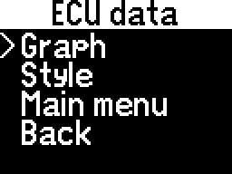
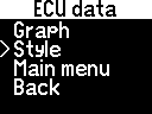
Graph - create a graph with one of the parameters from the current pageStyle - change a few things about the measurement set displayMain menu - return to the main menuBack- return to the parameter measurements
Graph
Create a graph from one of the parameters on the current page.
Draw - start plotting the graphConfigure - configure how the graph is drawnBack - return to the additional ECU data options
Configure (Graph)
Configure how the graph is drawn.
Having every parameter's graph configuration already set in the configuration file makes this step optional, but the pre-set values can still be edited here. Check out the Getting started chapter for more information.
Parameter - select which measurement from the current page to plotPrecision - select how finely to adjust the following optionsTop - select the maximum value that the graph can representBottom - select the minimum value that the graph can representRate - select after how many milliseconds to create a new point on the graphBack - return to the Graph menu
Setting Top lower than Bottom will invert the graph.
The Rate only controls how quickly a new point is plotted. The parameter is read from the module as quickly as possible.
(!) After setting Precision, opening one of the other options will round the value to it. For example, if Top is set to 5 and is edited with a Precision of 10, it will become 10 when accessed.
Draw (Graph)
Draw the graph how it was configured.
Style (ECU data)
Change how the ECU data menu looks.
Page count. - display the page's numberAlign units - if enabled, all measurement units are aligned, so the values are aligned as wellConn. indic. - display the spinning bar in the top-right corner to indicate the connection to the module(s)Bar->bottom - show the bar containing the page title / page number / connection indicator at the bottom instead of the topBack - return to the additional ECU data options
Selecting an option will enable or disable it.
If the page has a title, or the page counter is enabled, or the connection indicator is enabled, an additional bar will be created at the top/bottom with these elements. Otherwise, the bar will not appear.
Diagnostics
Connect to a module to perform diagnostic operations.
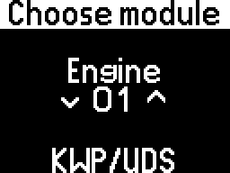
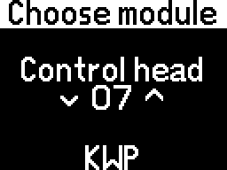
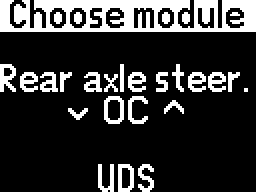
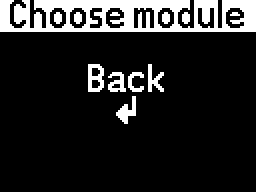
Some modules support the KWP-CAN protocol, some support UDS, and some support both. This is indicated by the bottom row on the module selector.
To return to the main menu without selecting a module, the Back option is located before module 01.
If all connection attempts fail, the following error will appear:
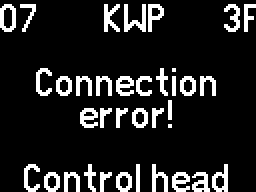
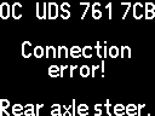
Otherwise, if the connection is successful, the following menu will appear:
Title - module name (scrolling)Identification - get information about the moduleFault codes - read the module's fault codesMeasuring blocks - read the module's measuring blocks (KWP-CAN only)Back - return to the main menu
Identification (Diagnostics)
Read the connected module's identification information.
Title - hardware numberImp. - importer codeWSC - workshop codeGerät - designatorCoding - only for KWP-CANLast line - software number
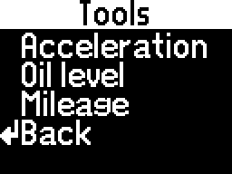
Acceleration - measure how quickly the vehicle accelerates between two speedsOil level - read the current oil levelBack - return to the Tools menu
If there is no configuration, or the configuration doesn't include these tools, they will be inaccessible.
Start menu - change on which page to start when the ignition is turned onFactory reset - reset all settings to defaultSoftware ver. - display the currently installed firmware versionUpdate - open the Wi-Fi network for uploading the configuration, boot logo or firmware updateBack - return to the main menu
Start menu
Here you can change on which page to start when the ignition is turned on.
You can choose between either starting on the main menu or on ECU data.
If starting on ECU data, you can also choose on which of the configured pages to start.
Menu - select on which menu to startPage - select on which page of ECU data to startBack - return to the Settings menu
If the main menu is selected, or ECU data is selected but there is no configuration, the page cannot be changed.
Factory reset
Here you can change reset all settings to default.
Doing so will also delete the configuration and boot logo.
OK - reset the settingsBack - return to the Settings menu without resetting the settings
After choosing to reset the settings, the following message will be displayed:
Software version
Here you can see what software version is currently installed.
This menu will appear automatically when the OPS system is activated.
The visualization will change sides automatically (front/rear) when changing the vehicle direction (forward/reverse).
You can also manually change the side with the Up/Down buttons.
The parking sensor visualization will appear even if the cluster is not in the "navigation mode" (if the Reset button was pressed shortly, as described in the Operating the menu chapter).
Holding the Reset button or turning off the OPS system will return to whatever menu was active when the visualization was triggered.
Using the configuration editor
The configuration editor is used for generating the configuration file, needed for the ECU data and Tools menus.
Notes
(!) If the source module for a parameter uses the UDS protocol, contact us to help you with the configuration.
If the source module for a parameter uses the KWP-CAN protocol, the "Block" and "Index" match with the numbers found in diagnostic software.
Input fields for numbers with decimals only accept a point (.) and not a comma (,)!
Optional step
If you already have a configuration file that you would like to edit, press the Edit a previous configuration button at the top of the page and choose the file.
Step 1: Choose included tools
In the first section you will see a drop-down list of tools you can enable.
To enable a tool, select it and check the Enabled checkbox.
When a tool is enabled, you can configure it with the options under Configure included tools.
Acceleration timer tool
Choose from which module/location to get the current vehicle speed in km/h. (!)
Oil level gauge tool
Choose from which module to get the current oil level and oil temperature.
Choose from which location to get the current oil level in mm. (!)
Choose from which location to get the current oil temperature in °C. (!)
Choose the oil level Min/Max values for your car, to display the level properly.
Step 2: Choose modules for ECU data
The ECU Data menu can show parameters from a maximum of 5 KWP and 5 UDS modules.
Here, you will choose from which modules you want to read parameters.
You have 5 "slots" for each protocol, and the module order doesn't matter.
For example, if you want to get parameters from the Engine (KWP), AWD (KWP) and Transmission (UDS):
In the KWP column select the number 1 and module 01 - Engine.
In the KWP column select the number 2 and module 22 - AWD.
In the UDS column select the number 1 and module 02 - Auto Trans.
Step 3: Configure ECU data
Here, you will configure each page for the ECU Data menu.
On a fresh start (not editing a previous configuration), the first page and first parameter will be created.
Each page can have a title (optional) and between 1-5 parameters.
Each parameter can have a name (example: Oil) and measurement units (example: mm), but they are optional and can be left empty.
Pages
To change the page's title, write something in the text box (or leave empty for no title).
To add a new page, press the + button.
When you have more pages, pressing the button will "insert" a new one right after the currently selected page.
To add the page at the end, you have to first select the last page and then press +.
To delete the currently selected page, press the - button.
You cannot undo after deleting!
To select another page (after adding more), press the box with the page number and select another one.
Parameters
To change the parameter's name, write something in the text box (or leave empty for no name).
To change the parameter's measurement units, write something in the text box (or leave empty for no measurement units).
To insert the special degree symbol (°) for the measurement units, write the letters "deg", they will be replaced.
Example: for °C, write "degC" in the measurement units text box.
To add a new parameter to the page, press the + button.
When you have more parameters, pressing the button will "insert" a new one right after the currently selected parameter.
To add the parameter at the end, you have to first select the last parameter and then press +.
To delete the currently selected parameter, press the - button.
You cannot undo after deleting!
To select another parameter (after adding more), press the box with the parameter number and select another one.
Parameter source
Here, you will select from which module/location the current parameter is read. (!)
Value display
Mode: Exact value
The parameter will be displayed exactly like in diagnostic software.
For the KWP protocol, some parameters will be displayed as text instead of numbers.
If you need these parameters to be shown as numbers instead of text, check the Forced value checkbox.
You will use this to find the value which corresponds to the text if you need the Custom text mode (explained below).
The Forced value checkbox will have no effect for UDS modules.
The Decimals drop-down selects how many digits are shown after the decimal point (0 for no decimal point).
Mode: Mapped value
The parameter's value will be mapped to a range.
To add a number from the value before mapping, enter this number in the Offset box (can be negative for subtraction).
The next section contains the map:
In Min will be transformed to Out Min.
In Max will be transformed to Out Max.
Every value between In Min and In Max will be scaled between Out Min and Out Max.
To prevent the value from going lower than Out Min, check the Limit checkbox on the same row as Min.
To prevent the value from going higher than Out Max, check the Limit checkbox on the same row as Max.
The Decimals drop-down selects how many digits are shown after the decimal point (0 for no decimal point).
Example: to display a "Boost" parameter, you should first subtract the atmospheric pressure (~1000 mbar) and then transform from mbar to bar.
Write -1000 in the Offset box to subtract the atmospheric pressure (or write another number closer to your pressure).
Write 0 for In Min and Out Min, 1000 for In Max and 1 for Out Max. Now it is converted from mbar to bar (division by 1000).
Check the Limit checkbox on the same row as Min. Now the value can not become negative if the input is less than atmospheric pressure, but it can become more than 1 if the input is more than 1000.
Select the number of decimals according to preference.
Mode: Custom text
Instead of showing a value, you can set your own custom text based on the parameter's value.
All number inputs for the conditions only accept whole numbers, without decimals.
Condition: If value / if not value
If the parameter is equal to Value, it displays the first text (If value).
If the parameter is not equal to Value, it displays the second text (If not value).
Condition: If inside / outside range
If the parameter is between Min/Max, it displays the first text (Inside).
If the parameter is lower than Min or higher than Max, it displays the second text (Outside).
Condition: If below / inside / above range
If the parameter is lower than Min, it displays the first text (< min).
If the parameter is between Min/Max, it displays the second text ([min, max]).
If the parameter is higher than Max, it displays the third text (> max).
Example: you get the oil pressure status from the Instrument Cluster (KWP), which appears as text ("Oil Pr. 2 <min" / "Oil Pr. 2 OK"), but you want to convert it to just "<min" / "OK".
In Value display, select the Exact value mode and check the Forced value checkbox to transform the text into a number, then save this configuration and upload it.
You see that "Oil Pr. 2 OK" has become the number 31.
Edit the configuration and now in Value display select the Custom text mode, and the If value / if not value condition.
Write the number 31 for Value and the text "OK" in the first box and "<min" in the second box.
Now the custom text is displayed.
Value warning
Here, you can configure a warning mode, for example if a parameter's value is outside normal limits.
When a warning is triggered, the parameter's value (number/text) starts flashing until the error disappears.
All number inputs only accept whole numbers, without decimals.
Mode: Disabled
No warning for this parameter.
Mode: If exact value
The warning will be triggered if the parameter's value is the same as what you selected.
Mode: If not exact value
The warning will be triggered if the parameter's value is not the same as what you selected.
Mode: If inside range
The warning will be triggered if the parameter's value is between the Min/Max you selected.
Mode: If not inside range
The warning will be triggered if the parameter's value is not between the Min/Max you selected.
Example: in the previous example with the oil pressure, if you want to get a warning then it becomes "<min", you can set the mode to If not exact value and write the number 31 for Value.
Graph parameters
Here, you can configure the default values that are applied when you select a parameter to graph.
You can also modify these in the Graph menu, but setting them here will make it easier.
You can also input fractional values here, whereas you can only use whole numbers in the menu.
Warning: if you edit a fractional value in the menu, it will be changed to a whole number.
The fractional value will remain applied as long as you don't edit it.
Bottom - the lowest value the graph can showTop - the highest value the graph can showRate - how quickly to draw points (measured in milliseconds)
If Bottom has a higher value than Top, the graph will be inverted.
Parameters are read from the module as quickly as possible; Rate only changes how fast new points are drawn.
Example: Setting Bottom to 0, Top to 1000 and Rate to 150 means the graph will show values between 0-1000 and a new point will be drawn every 150ms.
Step 4: Download
After everything is configured, press the Download the current configuration button at the bottom of the page.
The config.bin file will download, please save it to your device.
Using the update webpage
To access the webpage, follow the instructions of the Update menu.
Configuration
Select .bin file - choose the config.bin file from your deviceUpload - upload the selected configuration fileDownload - download the currently installed configuration file (for editing)
Select .bmp file - choose a bitmap image from your deviceX coordinate - top-left corner horizontal position on the screen (0-63)Y coordinate - top-left corner vertical position on the screen (0-47)Duration - how many milliseconds the image stays on screenSet - upload the selected boot logo with its settings
Only .bmp format images are accepted, and 1-bit monochrome is preferred.
Pressing the Set button will preview the boot logo on the screen.
(!) Please avoid pressing the Set button while the a preview is on the screen!
It is possible to skip the boot logo before the duration runs out by pressing any button (Up/Down/Reset).
If there is a boot logo uploaded, it can be removed by unchecking the Enable boot logo checkbox and pressing Delete.
Update
Select .bin file - choose a firmware update file from your deviceUpdate - install the selected firmware update
After selecting the file and pressing Update, the progress bar will start to fill up.
Please do not turn off the ignition or disconnect the Wi-Fi while the update is in progress.
Wait until you receive the message "Done." on the webpage.
If the update fails, you will see the regular main menu.
If the update is successful, the following message will be displayed:
If the progress bar has not been filled completely, but you see the message "Done." (and the screen shows the main menu), please try updating again, perhaps with a different file.
Because the settings have been reset, you will need to upload your configuration file and boot logo again.


 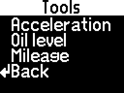
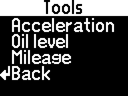